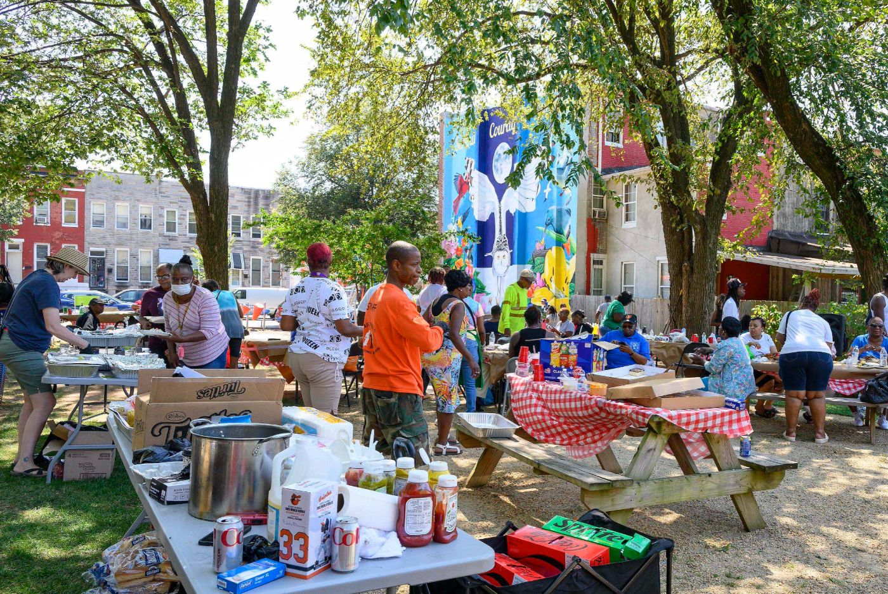
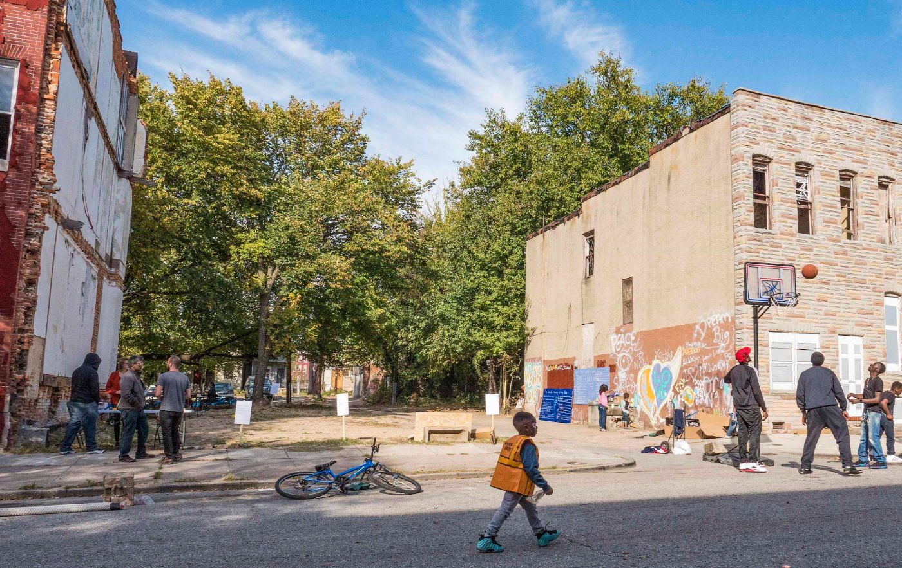
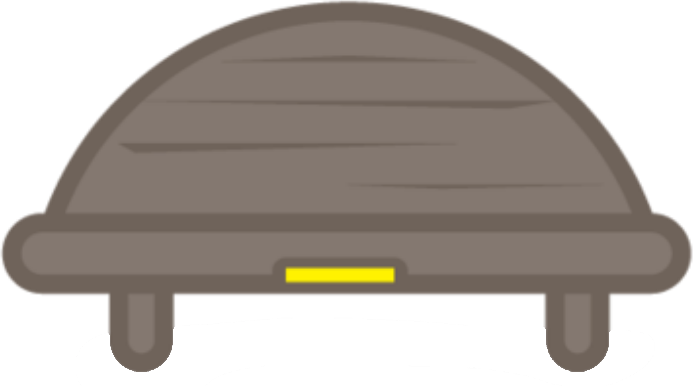

Even a glimpse of nature helps us.A Sacred Place does far more.
In one small place, it restores the people who visit, turns overlooked ground into a place to be, and draws a community together. And it sits where people already live. Not a drive away. Not a someday.
Nature heals. But only if you can experience it.
Which means close enough to walk to—on an ordinary Tuesday.


And nearby nature isn’t shared evenly.
Some places have no nature within reach. Others have it, but not for everyone. Whole neighborhoods carry the most stress and the least shade. So a Sacred Place goes where the need is, chosen on purpose.
Nearby is essential—and still not enough. People have to be invited in.
A greenspace can sit two blocks away for years and still feel like it isn’t for you. Someone has to open the gate, say the place is yours, and give you a reason to come back—an introduction, then an invitation, season after season. That work is as much of the design as the planting.
Most leave after the ribbon-cutting.
We don't.
Why this matters: the work of welcome only holds if someone is resourced to keep doing it.
We don't fund a project and move on. When a Sacred Place opens, the community that made it joins a Network we tend for the life of the space—a Firesoul™ with our support behind them, resources and small grants, design help when something isn't working, and the counsel of 130+ communities who have faced the same thing. It is the part of this work no one else does, and the reason these places are still in use decades on.
The community shapes the place before a shovel moves.
Someone local takes it on—and is never left to it alone.
Small grants, repairs, redesigns, and a new Firesoul when one moves on.
Thirty years on, the places we started with are still ours to look after.
Staying means the place ends up serving the community in ways nobody drew on the plans.
A meditation garden becomes the site of a weekly wellness class. A hospital greenway becomes where staff eat lunch and families get hard news. A schoolyard becomes an outdoor classroom with a curriculum other schools can use. We follow where a community takes its place, and we resource what it becomes.
Meet the Firesoul Network →A place like this doesn’t happen by accident.
Four commitments, on every site, from the first conversation on.
Made with intention.
Every element is designed to invite you to slow down.
Made with the community.
Shaped by the people who will use it, so it’s theirs.
Made to be heard.
A bench, and a Little Yellow Journal beneath it. You don’t just visit—you leave something of yourself.
Made to last.
Planted for what thrives in this specific place, and held by the Network for as long as it stands.
One place, many returns.
Most greenspaces are designed for one purpose. A Sacred Place sits at the intersection of three, and the gains compound.
 Sacred Place
Sacred Place
Lower stress, better recovery, less burnout, for patients, students, staff, and neighbors alike.
A Sacred Place gives back: tree canopy, shade, stormwater capture, pollinators, cooler ground; real ecological work on a small site.
Placed where greenspace is scarcest and stress is highest, so access isn't a matter of ZIP code.
Thirty years of Little Yellow Journal entries. A robust body of research. Two languages for the same moment.
In just 10 minutes, a shift happens.
Ten minutes is only realistic when nature is already close at hand. Now imagine those ten minutes on any given day, most weeks, for years—a whole neighborhood, over decades. That is what a Sacred Place makes possible.
Our cortisol levels drop.
The body responds before the mind does. Stress hormones fall measurably, within minutes.

People describe itA weight lifts.
"I never thought that I would
be sitting here—a person
who survived war, death,
poverty, self-doubt, and depression. Today, there is no doubt that
I have a purpose."
Thirty years in, the question is no longer whether nature helps. It is how to make it reach people.
The case for a Sacred Place isn't that nature is good for us; that's common knowledge now. It's that connecting people with nature takes more than proximity. Doing it well is a discipline, informed by decades' worth of journal entries, research, and more than 140 places.
See what we've learned →